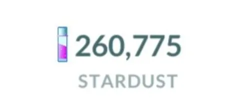
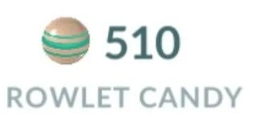
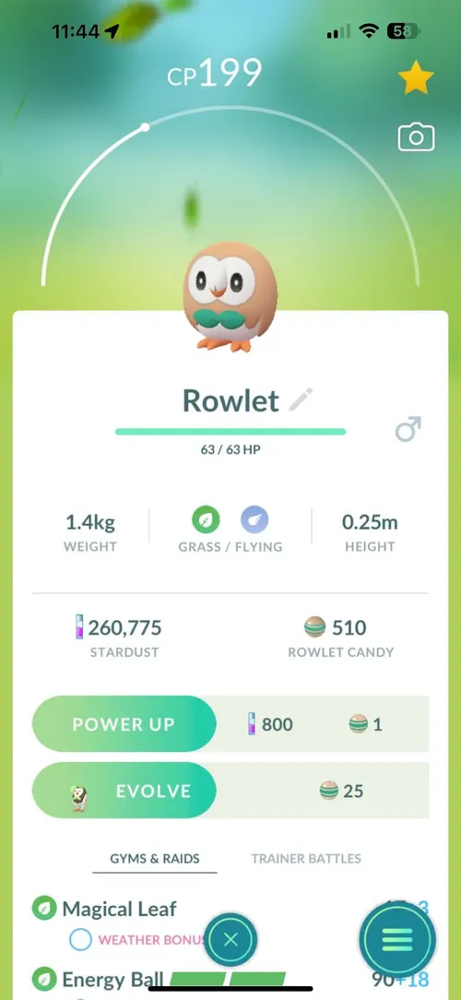
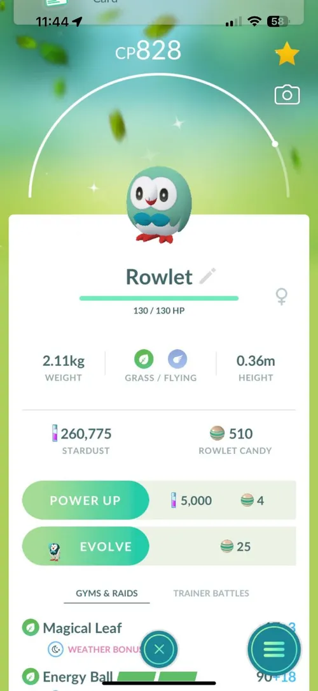
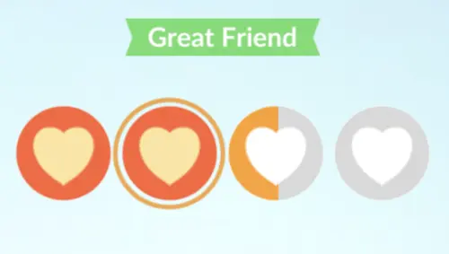
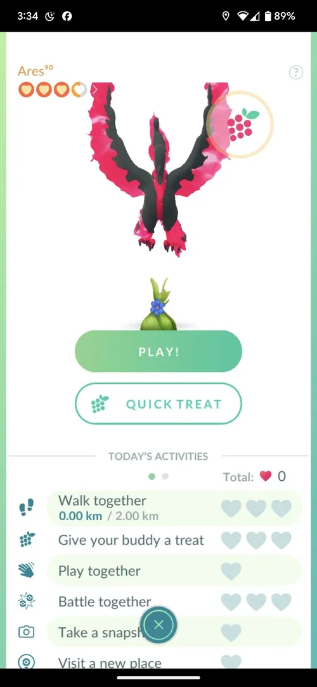

Solo Play
Pokemon
The first question you may be asking is, "CJ, what is a pokemon?" Pokemon are sentient creatures that appear in the world around you. They come in all sorts of shapes and sizes, varying from apples and key fobs to giant dragons and firebirds. They also come in varying powers, some being extremely powerful and useful, and some being cute but not very useful. In Pokemon Go, once you have enough candy, you are able to evolve your Pokemon. This usually increases their usability and strength, and, in some cases, their coolness.
In the world of Pokemon Go, the useful Pokemon are usually referred to as meta and are generally sought after more than others. There are plenty of regularly updated applications and resources online that outline what 'mons are considered "meta" and what aren't.
PokeStops
As you explore the surrounding world, you will notice upright discs that look like the image above. This are very important structures called PokeStops, and are key to resource gathering. When you spin them, they give various resources invluding PoekBalls, Great Balls, Ultra Balls, Pinap Berries, and more. When your item bag is full, you will be unable to gather more resources, so be sure to manage your storage well!
Another structure in the game are Gyms. These are elevated platforms that are quite recognizable and impossible to miss. These are where Gym Battles and Raids will occur (click here for more information. These also have PokeStops built into themand spinning them will give you the same resources as regular PokeStops, but also more premium items such as Potions, Super Potions, and Revives. These will be essential for
Stardust
Stardust is one of the most valuable resources in Pokemon Go. In fact, stardust could be considered a type of currency. Stardust has a variety of uses, such as increasing the CP (combat power) of your Pokemon (powering up) and allowing them to learn a second charged attack. Stardust can also be used to trade pokemon with your fellow trainers. It is up to you when and how you spend your stardust, so spend wisely!
Stardust can be obtained in a myriad of ways. Trainers can collect stardust by catching pokemon, winning raids with other trainers, winning battles against Team GO Rocket members, and participating in player-verses-player (PVP) battles. In short, stardust is very valuable, but is very easy to gather and store.
Candy
Candy is another valuable resource in Pokemon Go. You can use candy in addition to stardust to power up your Pokemon and teach them secondary charged attacks. To learn about different attacks your Pokemon can learn, click here.
Candy, like stardust, can be obtained from catching pokemon in the wild. However, candy obtained from catching pokemon will only give candy usable by the pokemon caught, so it may take some time to build up a good reserve of it for each 'mon.
Shinies
 Shiny pokemon are very similar to ordinary pokemon. In fact, they're the exact same, except a different color. These variants appear less often in the wild, usually at odds of 1/512, although some shinies are boosted, appearing with odds of 1/64. Due to the lower encounter rate, these Pokemon are hunted for more earnestly, and it is always a good time when a trainer encounters a shiny. In raids, Legendary Pokemon have a shiny rate of 1/20, making it significantly easier to catch shinies. Additionally, during community days, the shiny rate for the featured Pokemon is raised to the same 1/20 odds.
It is important to note, however, that if the odds are 1/20 or 1/64, this does not guarantee a shiny every 20 pokemon caught. The odds for each pokemon are the same 1/20 odds, meaning that you have better chances to encounter a shiny than normal 1/512 odds.
Friendship
While playing Pokemon Go, it is inevitable that you will encounter other Trainers playing, whether through raids or out and about. It is always a good idea to add Trainers as friends, to build friendships and earn XP. Building friendships is one of the most efficient ways to obtain XP, and trading with your friends is a great way to potentially obtain great Pokemon.
To build friendships with other Trainers, you can send them a gift! Gifts are obtained through spinning PokeStops, and are able to be stored in the Item Bag at no cost to your storage. Be sure to open the gifts they send back to continue the frienship and obtain items such as potions, revives, berries, and PokeBalls! Another good reason to build friendships with other trainers is the possiblity of becoming Lucky Friends, a rare occurence that is only possible between two trainers who are Best Friends, the highest level of Friendship.
Trades
Trading Pokemon is a great way to potentially obtain excellent IV pokemon, as well as free up Pokemon space and gain candies for your Pokemon. In order to trade with another Trainer, you must be at least Great Friends with them, or have sent each other one gift. Trades always require stardust, so be sure to have a good stash before mass trading with someone else.
There are three types of trades, normal trades, special trades, and lucky trades. Normal trades are your regular everyday trades, you give each other the pokemon, and the stats are rerolled. Special trades are similar to normal trades, except with shiny Pokemon, Legendary Pokemon, or pokemon not registered in the Pokedexes of each trainer. Finally, lucky trades are a great way to obtain pokemon with spectacular stats. Pokemon received from lucky trades are called lucky pokemon, and have a yellow glowing background, as well as reduced stardust costs for powering up.
There are two ways to obtain lucky Pokemon, the first being pure luck, as the name suggests. Trainers can expect the odds for lucky trades to be 1 in every 20 trades. The second way to receive lucky pokemon is from a guaranteed lucky trade. These are only possible with trainers you have reached Best Friends with. Once per day, Trainers have the opportunity to reach the status of Lucky Friends with their Best Friends. This means that the next trade they do will be a Lucky Trade. Take advantage of these trades to get yourself rare pokemon with great stats!
Team GO Rocket
As you explore the world around you, you will encounter PokeStops that have a blackish hue. There will also be a person standing next to the PokeStop, wearing a black uniform with the letter R on it. These are Team GO Rocket members, and they have stolen Pokemon and turned them dark! These pokemon are called shadow pokemon, and can be rescued from Rocket members upon defeating them. However, be warned, as these dark trainers will put up a real fight, so it is important to bring the correct counters. You can read more about counters here. Team GO Rocket members you may encounter include Grunts, Leaders, and Giovanni, the GO Rocket Boss! Go Rocket Leaders and the GO Rocket Boss are extremely difficult, so be prepared with correct counters before challening them!
After defeating members of Team GO Rocket, you have the opportunity to rescue their pokemon, called Shadow Pokemon. These dark Pokemon variants are some of the strongest creatures in the game, being able to deal out 20% more damage while taking 20% more damage. Shadow Pokemon are not cheap, however, costing 20% more candy and stardust to level up.
Buddy Pokemon
As you explore, you can allow a Pokemon of your choice to explore with you! This Pokemon is then considered your buddy pokemon, and will travel around with you as you journey. Trainers have the ability to build friendships with their buddies, earning hearts each time they complete an action with their Buddy Pokemon. These actions include feeding your buddy, playing with them, taking a snapshot of them, battling with them, and walking with them. Each action will earn you one heart, and in total you must earn 300 of these hearts for the Pokemon to earn the status of Best Buddy. Best Buddy Pokemon receive a CP boost, as well as a ribbon signifying its status.